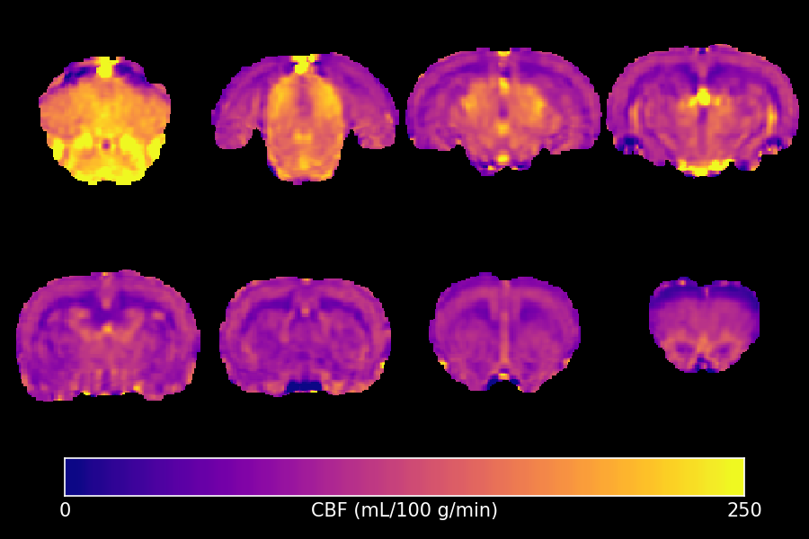

Perfusion¶
Perfusion is the study of blood flow within the brain. This module contains tools to calculate Cerebral Blood Flow (CBF) and the Oxygen Extraction Fraction (OEF).
The following programs are available:
qi_asl¶
This program implements the standard equation to calculate CBF from either Continuous or pseudo-Continuous Arterial Spin Labelling data (CASL or pCASL). For the exact equation used, see the first reference below.
Example Command Line
qi_asl asl_file.nii.gz --blood=2.429 --alpha=0.9 --average --slicetime --pd=reference_file.nii.gz <input.json
The input file must contain pairs of label & control volumes. Currently the order of these is hard-coded to label, then control. The file can contain multiple pairs if you are studying timeseries data. The arguments are discussed further below. It is highly recommended to provide either a separated Proton Density reference image or a tissue T1 map.
Example Command Line
{
"CASL" : {
"TR" : 4.0,
"label_time" : 3.0,
"post_label_delay" : [ 0.3, 0.6, 0.9 ]
}
}
The units for all these values must be consistent, seconds are preferred. If single-slice or 3D data was acquired, then post_label_delay should contain a single value. For multi-slice data, specify the --slicetime option and then provide the effective post-labelling delay for each slice.
Outputs
input_CBF- The CBF value, given in mL/(100 g)/min
Important Options
--blood, -bThe T1 value of blood at the field strength used. The default value is 1.65 seconds, corresponding to 3T. For 1.5T the value should be 1.35 seconds and at 9.4T it should 2.429 seconds. See reference 2.
--pd, -pProvide a separate image to estimate of the Proton Density of tissue. If this is not provided, the label images are used instead.
--tissue, -tProvide a T1 map to correct the Proton Density estimate. If a separate PD reference is not given, then an alternative is to correct the label images for incomplete T1 relaxation.
--alpha, -aThe labelling efficiency of the sequence.
--lambda, -lThe blood-brain partition co-efficient, default 0.9 mL/g.
References
qi_ase_oef¶
Estimates the Oxygen Extraction Fraction (OEF) from Asymmetric Spin-Echo (ASE) data. If the signal evolution each side of a spin-echo in the presence of blood vessels is observed carefully, it does not display simple monoexponential T2* decay close to the echo, but is instead quadratically exponential. By measuring the T2* decay in the linear regime using an ASE sequence, it is possible to extrapolate back to the echo and obtain an estimate of what the signal would be if no blood was presence. The difference between this and the observed signal can be attributed to the Deoxygenated Blood Volume (DBV), and from there the OEF can be calculated.
Example Command Line
qi_ase_oef ase_file.nii.gz --B0=9.4 $DB --fmap=fieldmap.nii.gz <input.json
Example Command Line
{
"MultiEcho" : {
"TR" : 2.0,
"TE1" : 0,
"ESP" : 0.002,
"ETL" : 10
}
}
TR must be provided but is not used in the calculation. Echo-times below the critical time (Tc) will be excluded from the R2’ calculation.
Outputs
input_R2prime.nii.gzThe R2’ map. Units are the same as those used forTR,TE1andESP.input_DBV.nii.gzThe Deoxygenated Blood Volume, in percent.input_OEF.nii.gzThe Oxygen Extraction Fraction, in percent.input_dHb.nii.gzThe Deoxyhaemoglobin concentration.
Important Options
--B0, -bField-strength the data was acquired at. This is used to calculate Tc and appears elsewhere in several equations.
--fmap, -fProvide a field-map (in Hertz). This will be used to provide first-order correction of Macroscopic Field Gradients (MFGs). If this option is specified, the derivative of the field-map in all 3 directions will also be saved.
--slice,-sIf the data was acquired with a slice-gap, use this option to specify the actual slice-thickness for the MFG calculation.
References